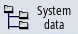

Loggable data that was logged when the action log function was active is displayed in the "Action Log File" window.
Log files
The actual data can be displayed using the following files:
-
"actual_actionlog.com"
-
"actual_crashlog.com"
Procedure
 | 1. | Select the "Start-up" operating area. |
|  | 2. | Press the "System data" softkey. The data tree is displayed. |
| | | You will find the saved files in the HMI data folder under /logs/action log. |
| | 3. | Select the desired com file and press the "Open" softkey or double-click the file. |
| | 4. | Press the "Display new" softkey to update the display of events in the log (actual_actionlog.com). The entries made since the log file was called up are displayed. |